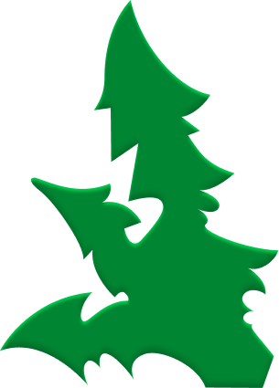
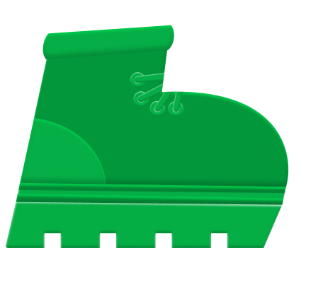
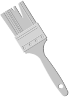
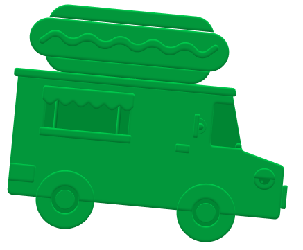
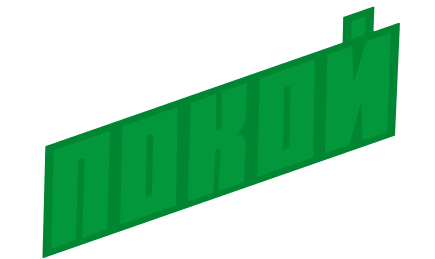
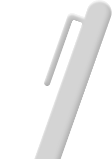

Идея «ППП»
прогулка + пленэр + пикник
Мы проведем не урок рисования, а эко-пленэр с пикником для тех, кто загрязнен усталостью. Проведите 3 часа на свежем воздухе в компании экологичных людей и изобразите прекрасное.

3 часа созидательной прогулки
10 мая, 15:00–17:30, в Нескучном
саду


прогулка + пленэр + пикник
Мы проведем не урок рисования, а эко-пленэр с пикником для тех, кто загрязнен усталостью. Проведите 3 часа на свежем воздухе в компании экологичных людей и изобразите прекрасное.

| Время | Событие |
|---|---|
| 15:00–15:40 | Сбор и прогулка |
| 15:40–17:10 | Пленэрная практика |
| 17:10–18:00 | Бесследный пикник |
| 18:00 | Шеринг и расход |
Наша задача: наконец почувствовать землю под ногами, найти связь с природой и очиститься от тревог и беготни.

На пленэре нет «красиво» и «некрасиво»: рисуем так, как чувствуем, так, как нам самим хочется

экологичные впечатления

Присоединись к эко-прогулке прямо сейчас!
Заполни заявку и мы
скоренько напишем тебе

Удобную одежду, воду в многоразовой бутылке, перекус в контейнере, плед, стул раскладной, карандаши HB, B2 и B4, бумагу плотную A4, акварель да салфетки.
Прогулка будет в небольшой компании до 10 человек, чтобы каждый смог поделиться своими мыслями и самочувствием без смущения и неловкости.
Без паники. Наша команда будет ждать еще 10 минут после начала ивента. Наш маршрут разделен на 3 ключевые точки: место прогулки, пленэра и пикника. Останавливаясь на каждом этапе, мы скидываем геолокацию в чат. В любом случае свяжитесь с @MARIA_KRASNY для оперативной помощи!
На каждой точке прогулки мы раскроем три важных жизненных аспекта: экологичный ритм жизни, 100% чистое окружение, новый способ прибыльной переработки: 20% привычек 80% эффекта.
Да не вопрос! Приносите стекло, макулатуру, батарейки, старую одежду. Только это, чтобы все чисто, сухо было. @LUNYCD расскажет и покажет, куда в Москве это все сдать, как отсортировать да еще денег получить.